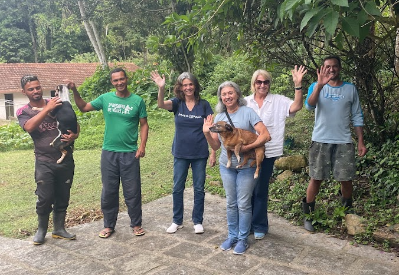
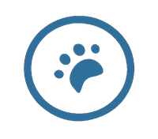

Comida todos os dias
Ração e alimentação para os animais acolhidos no abrigo.

TERESÓPOLIS, RJ · PROTEÇÃO ANIMALCADA VIDA MERECE UMA NOVA CHANCE

Há mais de 20 anos resgatando e cuidando de animais.
AMOR QUE CONTINUA DEPOIS DO RESGATE
Chegar ao abrigo é o início de uma nova vida. Depois do resgate, vêm a comida de todos os dias, os remédios, as consultas e um lugar seguro para descansar.
É esse cuidado que o Grupo Estimação / SOS Animal oferece em Teresópolis, na região serrana do Rio de Janeiro. E é com doações como a sua que conseguimos seguir.
Um resgate muda uma vida.
O cuidado diário sustenta essa mudança.
Fundado por Bebete Filpi, o Grupo Estimação atua há mais de 20 anos na proteção animal. Durante a tragédia das chuvas de 2011, participou do resgate de animais na região.
Hoje, o santuário SOS Animal, na região do Parque dos Três Picos, acolhe animais que precisam de cuidado. Sem ajuda do governo, contamos com a solidariedade de quem acredita nesse trabalho.
PARA ONDE VAI SUA DOAÇÃO
Ração e alimentação para os animais acolhidos no abrigo.
Medicamentos, consultas e tratamentos veterinários para quem precisa.
Limpeza, manutenção e o trabalho diário de cuidar do abrigo.
CUIDADO QUE SE REPETE
Uma contribuição mensal ajuda o abrigo a planejar o próximo mês. Você pode apoiar pelo Apoia.se.
Seja doador mensalCOM TRANSPARÊNCIA, SEM COMPLICAÇÃO
Sim. Pelo Pix, você escolhe o valor no aplicativo do seu banco. Cada contribuição ajuda a manter o cuidado dos animais.
A chave Pix é o CNPJ 08.996.430/0001-17 da Sociedade de Proteção Ambiental e Animal Grupo Estimação. Confira o nome e o CNPJ do recebedor no seu banco antes de confirmar.
Acompanhe os animais e a rotina no Instagram @grupoestimacao. No site da ONG, você também encontra uma estimativa dos gastos mensais.
O Pix desta página é uma doação avulsa. Para contribuir todo mês, use o botão “Seja doador mensal”, que leva à nossa página no Apoia.se.
Sim! Compartilhar esta campanha com amigos e familiares ajuda nossa história a chegar a mais pessoas. Para outras formas de apoio, fale com a equipe pelo Instagram.